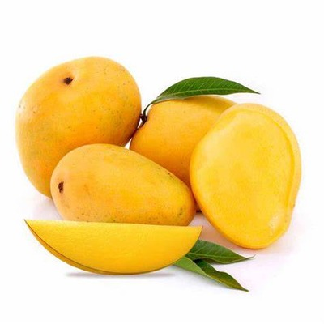

Mango
Mango, (Mangifera indica), member of the cashew family (Anacardiaceae) and one of the most important and widely cultivated fruits of the tropical world. The mango tree is considered indigenous to southern Asia, especially Myanmar and Assam state of India, and numerous cultivars have been developed. Mangoes are a rich source of vitamins A, C, and D.
The tree is evergreen, often reaching 15–18 metres (50–60 feet) in height and attaining great age. The simple leaves are lanceolate, up to 30 cm (12 inches) long. The flowers—small, pinkish, and fragrant—are borne in large terminal panicles (loose clusters). Some have both stamens and pistils, while others have stamens only. The fruit varies greatly in size and character. Its form is oval, round, heart-shaped, kidney-shaped, or long and slender. The smallest mangoes are no larger than plums, while others may weigh 1.8 to 2.3 kg (4 to 5 pounds). Some varieties are vividly coloured with shades of red and yellow, while others are dull green. The single large seed is flattened, and the flesh that surrounds it is yellow to orange in colour, juicy, and of distinctive sweet-spicy flavour.
The mango does not require any particular soil, but the finer varieties yield good crops only where there is a well-marked dry season to stimulate fruit production. In rainy areas a fungal disease known as anthracnose destroys flowers and young fruits and is difficult to control. Propagation is by grafting or budding. Inarching, or approach grafting (in which a scion and stock of independently rooted plants are grafted and the scion later severed from its original stock), is widely practiced in tropical Asia but is tedious and relatively expensive. In Florida, more efficient methods—veneer grafting and chip budding—have been developed and are used commercially.